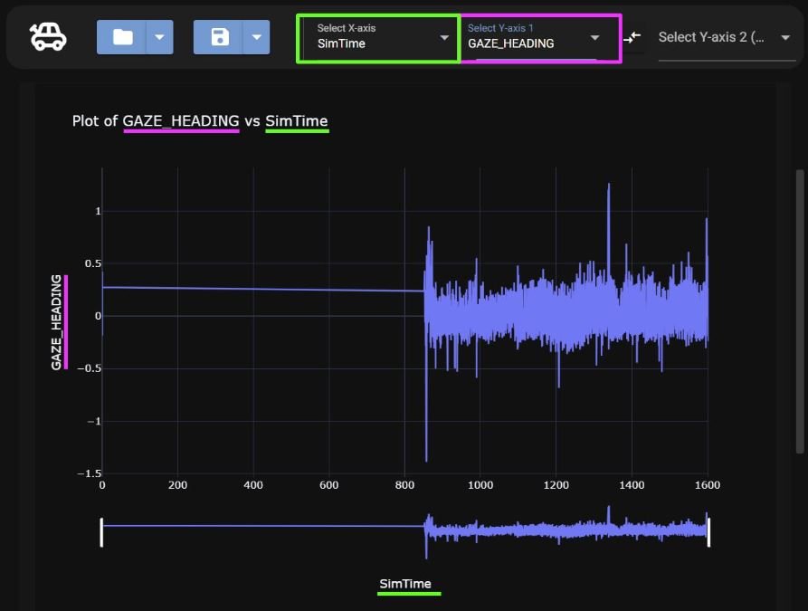

Getting Started
Opening a Dat File
Once the program is open and running, to open a dat file:
1.Select the file icon
2.Select the dat file in your file directory

Once opened the graph should update with the data
Viewing a Dat File
Once a dat file is opened there are two ways to view the data, a line graph and a histogram
Line Graph

The line chart tab will already be selected

Histogram
To view the data as histogram, select the histogram tab

Analyzing Data
Once a dat file is loaded, the data can be analyzed by changing the X and Y axes
1. Pick an X axis
Start by clicking on the X axis drop down and select a dataset
2. Pick a Y Axis
Once, an X axis is chosen the next step is to select a Y axis dataset from the Y axis dropdown
3. View Plot
Once the X and Y axes are chosen, the full plot can be viewed as seen below.

In the image, the X axis chosen was SimTime, and the Y axis chosen was Gaze Heading. This can also be seen in the title of the graph and along their respective axes.
Second Y Axis
An option to add a second dataset along the Y axis is available. To add another Y dataset select the second Y axis option and pick a data set as seen in the image below.

Once the data set is chosen a second line a different color will be displayed. The new Y Axis can be seen on the right of the graph.

Viewing Summary Stats
To see the summary statistics of the data, scroll under the graph to view

Saving a Graph
The dat file graphs are able to be saved as images, for more details on changing the save file type and changing the saved file location, see Saving Options
Saving the Line Graph
To save the line graph make sure the chart tab is selected and select the save icon

Saving the Histogram
To save the histogram graph make sure the histogram tab is selected and select the save icon